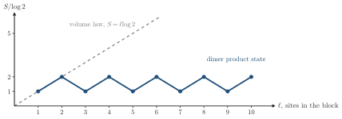
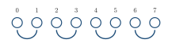
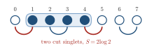
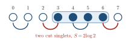
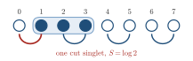

Page 5 of 12 of this session
7.6 Entanglement entropy of a solvable dimerized chain
Does the entanglement entropy of a block of sites grow with the length of the block? We will now see that for a product of singlets it does not. The entropy only counts the singlets that the two ends of the block cut, so it stays at most \(2\log 2\) for a block of any length.
\[S(\rho_A) = -\,\mathrm{Tr}\!\left(\rho_A \log \rho_A\right), \tag{7.6}\]
\[S = -\left(\tfrac12\log\tfrac12 + \tfrac12\log\tfrac12\right) = \log 2. \tag{7.7}\]
The first equation is the entanglement entropy of a part \(A\) of a system, computed from the eigenvalues of its reduced density matrix \(\rho_A\), which we get by tracing out the rest \(B\). The second is its value for the singlet of two spins, where each spin alone is in the maximally mixed state \(\tfrac12\mathbb 1\), so \(S=\log 2\).
There are two exactly solvable models that show how (7.6) to (7.7) scale with the system size. They are the key to the whole session, so let us go through them carefully.
Let us take a one-dimensional chain of spin-1/2’s, but we couple the spins only in separate pairs. There is an antiferromagnetic bond between sites \(0\) and \(1\), another one between \(2\) and \(3\), another one between \(4\) and \(5\), and so on, and there is no coupling between different pairs,
\[H = \sum_n J\,\mathbf{S}_{2n}\cdot\mathbf{S}_{2n+1}.\]
We can solve this Hamiltonian exactly, because it is a sum of independent Heisenberg dimers. Its ground state is therefore an exact tensor product of singlets, with one singlet per dimer bond.
The ground state of the decoupled dimers is the product of singlets
\[|\Psi\rangle = |\text{singlet}\rangle_{01} \otimes |\text{singlet}\rangle_{23} \otimes |\text{singlet}\rangle_{45} \otimes \cdots. \tag{7.8}\]
A block of consecutive sites that cuts \(n_\text{cut}\) of these singlets has the entanglement entropy \(S=n_\text{cut}\log 2\). This is at most \(2\log 2\) for a block of any length, since only its two ends can cut a singlet.
Physically, this is a valence-bond product state, also called a dimer product state, which is the simplest example of a gapped state with short-range entanglement, and not a spin liquid. The ground state does not break any symmetry of this Hamiltonian, and it is separated from the lowest triplet excitation by a large gap, which is the singlet-triplet splitting of a single dimer. For this reason it is as far from criticality as a spin model can be.
Now we divide the chain into two parts and ask for the entanglement entropy. Since (7.8) is a tensor product over separate bonds, the reduced density matrix \(\rho_A\) factorizes bond by bond. A dimer that is fully inside \(A\), or fully inside \(B\), gives a pure state in \(\rho_A\). So it gives zero to \(S\), with the same argument as for the product state in Section 7.5. The only bonds that contribute are the ones that are cut by the boundary between the two parts. Each cut bond gives the single-dimer result (7.7), \(\log 2\). The reason is that tracing out one half of a singlet always leaves the same maximally mixed single-site density matrix, regardless of the rest of the chain. So if the boundary cuts \(n_\text{cut}\) bonds, \(S = n_\text{cut} \log 2\).
The steps From the product of singlets (7.8) to the entropy of a block
The simplest case is one singlet with the site \(a\) in \(A\) and its partner \(b\) in \(B\). The trace over \(b\) leaves the result (7.7),
\[\rho_a=\tfrac12|{\uparrow}\rangle\langle{\uparrow}|+\tfrac12|{\downarrow}\rangle\langle{\downarrow}|=\tfrac12\mathbb 1, \qquad S(\rho_a)=\log 2.\]
For the whole chain we write the density matrix of (7.8) as a product over the dimers, \(|\Psi\rangle\langle\Psi|=\bigotimes_n\rho_n\), with \(\rho_n\) the projector on the singlet of the sites \(2n\) and \(2n+1\). The trace over \(B\) acts on each factor alone. A dimer inside \(A\) keeps its pure \(\rho_n\), a dimer inside \(B\) gives its trace, which is 1, and a cut dimer gives \(\tfrac12\mathbb 1\) on its site in \(A\). So
\[\rho_A=\bigotimes_{\text{inside }A}\rho_n\;\otimes\bigotimes_{\text{cut}}\tfrac12\mathbb 1.\]
The eigenvalues of a tensor product of matrices are the products of their eigenvalues, each factor has trace 1, and \(\log(xy)=\log x+\log y\), so the entropy of a product is the sum of the entropies,
\[S(\rho\otimes\sigma)=S(\rho)+S(\sigma).\]
A pure factor gives 0 and each factor \(\tfrac12\mathbb 1\) gives \(\log 2\), which is \(S=n_\text{cut}\log 2\).
Let us take a small subsystem \(A\) whose two ends cut through two dimers, one on each side. Then two singlet bonds cross the boundary, so \(S = 2\log 2\). Let us now take a much larger subsystem \(A\), with a width of many dimers, whose ends again cut through one dimer each. The boundary still crosses only two singlet bonds, the ones at its two edges, so we get again \(S = 2\log 2\), with no change. The entanglement entropy of this state does not grow with the size of the subsystem. It is fully determined by the two points where the one-dimensional boundary is, for any distance between these two points.

Copper nitrate is a dimerized chain of spins 1/2, with the antiferromagnetic exchange \(J_1=0.44\) meV inside the dimers and the ratio \(\alpha=J_2/J_1=0.24\) between the weak and the strong bonds. Its excitations are measured with inelastic neutron scattering, and for magnetic fields below \(\mu_0H_{c1}=2.8\) T its ground state is a singlet. The measurement is in this article. The entropies that follow are our own calculation and not a measurement. Exact diagonalization of an open chain of 16 spins with \(J_2=0.24J_1\) gives \(S=1.00\log 2\) for a cut through a strong bond and \(0.035\log 2\) for a cut through a weak bond. So the ground state of copper nitrate is close to the product of singlets (7.8).
The ground state of eight spins is a product of four singlets,
\[|\Psi\rangle = |\text{singlet}\rangle_{01} \otimes |\text{singlet}\rangle_{23} \otimes |\text{singlet}\rangle_{45} \otimes |\text{singlet}\rangle_{67}.\]

In each picture the shaded sites form a block, and each arc is a singlet. Which block has zero entanglement entropy?
Show the answers
- A. ✗ False
This is false. The block contains the dimer \((2,3)\) but it cuts \((0,1)\) at site 1 and \((4,5)\) at site 4. Two singlets are cut and the entropy is \(2\log2\).

Sites 1 to 4 cut the two red singlets. - B. ✓ True
This is true. The block contains the dimers \((2,3)\) and \((4,5)\) completely, and its two boundaries fall between dimers. No singlet is cut, so the entropy is zero.
- C. ✗ False
This is false. The block cuts the dimer \((2,3)\) at site 3 and the dimer \((6,7)\) at site 6. Two singlets are cut and the entropy is \(2\log2\), not zero.

Sites 3 to 6 cut the two red singlets.
The ground state of a chain is a product of singlets,
\[|\Psi\rangle = |\text{singlet}\rangle_{01} \otimes |\text{singlet}\rangle_{23} \otimes |\text{singlet}\rangle_{45} \otimes \cdots.\]
We take the block of the sites 1, 2 and 3. What is its entanglement entropy?
Show the answers
- A. ✗ False
This is false. The site 1 is paired with site 0, which is outside the block. This singlet is cut and it adds \(\log2\), even if the dimer \((2,3)\) is inside.

Sites 1 to 3 cut one singlet, the red one. - B. ✗ False
This is false. The right boundary falls between the dimers \((2,3)\) and \((4,5)\) and cuts nothing. The block of the sites 2 to 5 also has two boundaries, and its entropy is zero, since both fall between dimers.
- C. ✓ True
This is true. The dimer \((2,3)\) is inside the block, and the dimer \((0,1)\) is cut at the left end. The right end cuts nothing, so there is one cut singlet.
One dimer has the Hamiltonian \(H=J\,\mathbf S_0\cdot\mathbf S_1\), with \(J>0\) and spins 1/2. Use the total spin \(\mathbf S_\text{tot}=\mathbf S_0+\mathbf S_1\) to find its levels, and find the gap of the product of singlets (7.8).
Solution
We square the total spin, \(\mathbf S_\text{tot}^2=\mathbf S_0^2+\mathbf S_1^2+2\,\mathbf S_0\cdot\mathbf S_1\). Each spin 1/2 has \(\mathbf S_i^2=\tfrac12\cdot\tfrac32=\tfrac34\), so
\[\mathbf S_0\cdot\mathbf S_1=\tfrac12\Big(\mathbf S_\text{tot}^2-\tfrac32\Big).\]
Two spins 1/2 give a total spin \(s=0\) or \(s=1\), with \(\mathbf S_\text{tot}^2=s(s+1)\), which is 0 or 2. The singlet, \(s=0\), has the energy \(\tfrac J2\big(0-\tfrac32\big)=-\tfrac34J\), and the three triplet states, \(s=1\), have \(\tfrac J2\big(2-\tfrac32\big)=\tfrac14J\). As a check, the four levels add up to \(-\tfrac34+3\cdot\tfrac14=0\), the trace of \(\mathbf S_0\cdot\mathbf S_1\).
The dimers of (7.8) are not coupled, so the lowest excitation of the chain turns one singlet into a triplet, and it costs \(\tfrac14J-(-\tfrac34J)=J\) for a chain of any length. This is the large gap of the dimer product state. In copper nitrate the dimers have \(J_1=0.44\) meV, so an isolated dimer of this material would have its triplet \(0.44\) meV above the singlet, and the weak bonds between the dimers change this value.
- In Section 7.7 the same construction with clusters of four sites in two dimensions gives an entropy that grows with the boundary.
- In Section 8.5 the same decoupled dimers (8.4) give a valence bond solid, whose excitations are spin-\(1\) triplons.
- In Section 8.9 the chain with alternating bonds gives a gapped band of spinons.